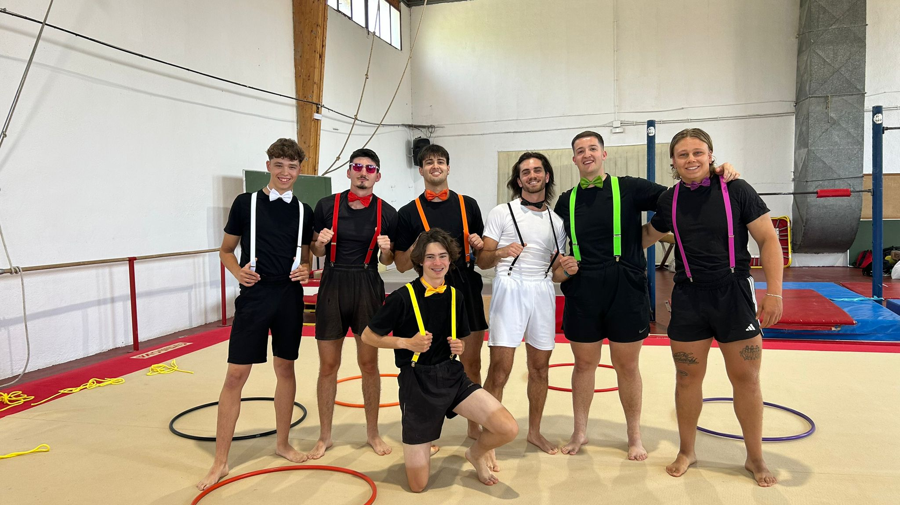

Hola 👋, mi nombre es Pablo Hervás, tengo 19 años y soy alumno de primero de carrera de Ciencias de la Actividad Física y el Deporte aquí en Granada. Curso en el grupo B (3R) y es mi primer año en esta asignatura y en esta ciudad tan bonita.
Mi deporte desde siempre ha sido el fútbol. Empecé con seis años en la posición de portero y hasta hace un año y medio fue una de mis mayores pasiones. Tuve que dejarlo por numerosas e injustas lesiones. Mi relación con la Gimnasia Rítmica antes de llegar a la carrera era inexistente, y al principio no tenía claro si me gustaría, pero la he disfrutado muchísimo a lo largo del segundo cuatrimestre.
💡 Mis hobbies: Pasar tiempo con los míos, ver series y disfrutar de los espacios naturales.
"La motivación es lo que te hace empezar. El hábito es lo que te mantiene."
— Rafael Nadal Parera
Considero que la disciplina, tanto en el deporte como en la vida, es lo que te hace progresar como ser humano.
📓 MI DIARIO
Selecciona un día para leer los secretos que esconden las clases de gimnasia rítmica del grupo 3R.
26 de Mayo COREOGRAFÍA FINALLeer ➡
19 de MayoLeer ➡
14 de MayoLeer ➡
12 de MayoLeer ➡
5 de MayoLeer ➡
30 de AbrilLeer ➡
28 de AbrilLeer ➡
23 de Abril TALLERLeer ➡
21 de AbrilLeer ➡
16 de AbrilLeer ➡
14 de Abril TALLERLeer ➡
9 de AbrilLeer ➡
7 de AbrilLeer ➡
23 de Marzo TEÓRICALeer ➡
19 de MarzoLeer ➡
16 de Marzo TEÓRICALeer ➡
12 de Marzo TALLERLeer ➡
10 de MarzoLeer ➡
09 de Marzo TEÓRICALeer ➡
05 de MarzoLeer ➡
03 de MarzoLeer ➡
02 de Marzo TEÓRICALeer ➡
26 de FebreroLeer ➡
24 de FebreroLeer ➡
23 de Febrero TEÓRICALeer ➡
19 de Febrero ✨ PRIMERA CLASELeer ➡
26 de mayoCOREOGRAFÍA FINAL
Hoy es un día especial por muchos motivos, por un lado es un día de alegría porque vamos a realizar nuestra actuación de la coreografía final, sin embargo, por otro lado es nuestro último día juntos de gimnasia rítmica😔.
Este día consistía en realizar la coreografía final delante de toda la clase para evaluarnos. Nuestro grupo decidió vestirnos elegantes y con tirantes llamativos con pajaritas de colores.

Por los colores de pajaritas y tirantes somos: Rosa-Arne; Verde-Pedro; Negro-Pelayo; Naranja-Frigopie(Dani); Amarillo-Martín; Rojo-Braulio; Blanco-Pablo(YO) y juntos somos los PEQUEÑOS GIGANTES.
Nuestra canción elegida fue un mix que empezaba con Giant de Calvin Harris y terminaba con una más movida llamada Sorry For Party Rocking de LMFAO. Sinceramente me ha encantado la experiencia, me lo he pasado súper bien y me ha servido para soltarme un poco más corporalmente hablando💃.
19 de Mayo
Hoy día 19 de mayo de 2026 ha sido la séptima simulación docente impartida en primer lugar por Olivia e Irene y en segundo lugar por Claudia y Marina. La sesión se ha centrado en los aros🌞⭕.
En primer lugar, Olivia e Irene propusieron una serie de ejercicios que para mí resultaron muy dinámicos y divertidos. Comenzamos con un juego de persecución en el que el aro servía como zona de salvación. Posteriormente, pasamos a trabajar por parejas, realizando lanzamientos de aro para que el compañero lo recibiera antes de que cayera al suelo o mediante un bote. También practicamos rodamientos del aro por el suelo y por distintas partes del cuerpo, como los brazos o la espalda, lo cual requería mucha coordinación y control corporal. La sesión concluyó con una actividad en la que debíamos imitar las posiciones corporales que las profesoras adoptaban dentro del aro, lo que fomentó la flexibilidad y el equilibrio.
En segundo lugar, Claudia y Marina enfocaron su parte en la creación de pequeñas secuencias coreográficas utilizando el aro. Nos dividieron en grupos y nos asignaron la tarea de enlazar varios movimientos previamente aprendidos, como giros del aro en la mano, saltos a través de él y lanzamientos cortos. Esta actividad potenció nuestra creatividad y el trabajo en equipo, obligándonos a sincronizar nuestros movimientos con el ritmo de la música.
A nivel personal, esta sesión me ha resultado muy enriquecedora ya que el aro es uno de los aparatos más vistosos de la gimnasia rítmica y ofrece un sinfín de posibilidades motrices. He mejorado mi precisión en los lanzamientos y recepciones, y he disfrutado mucho con el proceso de creación colectiva.
14 de Mayo
El día de hoy ha tocado la simulación docente de cuerdas!! La primera parte de la sesión ha sido impartidacpor Arne y Martín. Esta parte de la sesión ha sido algo confusa ya que los juegos y "retos" eran muy teóricos y no tenian una finalidad mayor que imitar todo lo que decía Martín. Además montaron un "tres en raya" que al final por mala gestión no se llegó a jugar. Me quedé con las ganas de competir en ese "tres en raya" pero no se pudo. Luego la segunda parte de la sesión la impartieron unos compañeros de otro grupo llamados Pablo y Jose. Relizaron una coreo bastante elaborada y super bien explicada y planteada aunque en lo personal algo compleja. Aquí está la ultima versión del ensayo general de esta coreografía con cuerdas tan guay!!!
Por último ,entre grupos, tuvimos que montar una coreografía con una canción concreta y temática de vaqueros. Al final la mejor coreografía entre los 3 grupos, ganaría un paquete de bombones de kinder!😋. Aqui dejo el video de la actuación de los VAQUEROS...🤠🤠🤠
Al final el resultado para nuestro grupo fue...... la medalla de bronce🥉. Nos quedamos con las ganas de ese premio tan dulce.😞🙈
12 de Mayo
La sesión del día de hoy ha sido la quinta simulación docente centrada en las pelotas🏀. En primer lugar, los profesores han propuesto ejercicios de familiarización con el objeto: botes con la mano derecha e izquierda, recepciones con dos manos y con una sola, rodamientos de la pelota por los brazos y la espalda, etc. Posteriormente, hemos pasado a trabajar en parejas, realizando pases de pecho, picados y por encima de la cabeza, introduciendo desplazamientos laterales y giros antes de recibir el balón.
La segunda parte ha sido más lúdica y competitiva. Nos han dividido en grupos y debíamos realizar una pequeña coreografía utilizando los elementos aprendidos previamente, integrando además un programa de televisión llamado Got Talent📺, donde un grupo exponía su coreografía y los demás compañeros debían evaluarla haciendo de jurado. Ha sido una dinámica muy divertida que ha fomentado la creatividad y la cohesión grupal.
En resumen, una sesión muy completa que me ha servido para mejorar mi coordinación óculo-manual y para aprender nuevas formas de trabajar la expresión corporal a través de un objeto tan cotidiano como es una pelota. Os dejo por aquí un vídeo resumen de la sesión.
5 de Mayo
Hoy día 5 de mayo ha tocado la cuarta simulación docente, centrada en los giros🌀. La primera parte de la sesión ha sido impartida por Pedro y Ramón. Hemos comenzado realizando ejercicios de equilibrio sobre un pie (passé, arabesque) para posteriormente intentar introducir el giro de 180 y 360 grados. También hemos trabajado la importancia de la mirada fijando un punto para no marearnos. Sinceramente, los ejercicios me me han parecido un poco confusos y difíciles de ejecutar, ya que se requería una técnica de base muy sólida que no poseemos, lo que provocaba frustración en algunos compañeros.
La segunda parte ha sido dirigida por Lolo y Lucas. Su propuesta ha sido algo más dinámica, planteando juegos por equipos donde debíamos desplazarnos realizando diferentes tipos de giros (sobre rodillas, sentados, en el sitio) y congelar la postura al parar la música. Aunque ha sido más divertida, sigo pensando que la explicación de la técnica de giro podría haber sido más clara para facilitarnos el aprendizaje.
A pesar de la dificultad, valoro positivamente la sesión ya que los giros son un elemento fundamental en la gimnasia rítmica y es importante experimentar la complejidad que conllevan. Os dejo por aquí un vídeo resumen de mis caídas e intentos de giro.
30 de Abril
¡¡¡Hoy es el día de nuestra simulación docente!!! Hoy he sido junto a mi compañero Álex el profesor de gimnasia rítmica🧑🏫. Nuestra sesión estaba centrada en los saltos, un elemento clave en este deporte. Estábamos bastante nerviosos pero con muchas ganas de hacerlo bien.
Comenzamos con un calentamiento dinámico con juegos como "el semáforo", donde los compañeros debían desplazarse según el color indicado y realizar un salto específico (vertical, agrupado, de extensión) al ponerse en rojo. Posteriormente, pasamos a la parte principal donde explicamos la técnica del salto de zancada (grand jeté) y del salto de tijera, utilizando colchonetas y bancos suecos para facilitar el impulso y la fase de vuelo. Propusimos un juego por parejas llamado "el dominó bailarín" para trabajar la sincronización.
Para terminar la sesión realizamos una pequeña coreografía grupal enlazando tres tipos de saltos diferentes al ritmo de una música movida. Creo que la sesión ha salido bastante bien, los compañeros han participado con entusiasmo y hemos recibido un feedback muy positivo por parte de la profesora, destacando nuestra organización y la claridad en las explicaciones. ¡¡Objetivo cumplido!! Os dejo por aquí el grabado por Ismael en la parte de su sesión donde frigo me coge y hacemos un paso bastante vistoso por el aire.🤭
28 de Abril
La clase del día de hoy ha sido un poco diferente a lo que estamos acostumbrados, ya que la profesora ha dado un paso al margen para que dos grupos de alumnos den la clase en la primera simulación del cuatrimestre.
La primera parte de la sesión la han realizado Daniel Alvarez, Julián y Javi. La verdad que han intentado hacerlo lo mejor que han podido, pero no me ha gustado en exceso ya que había juegos de competición como relevos en los cuales no primaba la velocidad si no la técnica , cosa que veo que carecía de sentido.
La segunda parte la han llevado a cabo Daniel Jimenez y Braulio con una coreografía elaborada y divertida a la par de creativa. En esta parte me he divertido bastante y colaborado con mis compañeros para que saliera lo mejor posible. 🕺🤌 A continuación dejo por aquí dos vídeos de la sesión de hoy:
23 de AbrilTALLER
Hoy es un gran día , es... nuestro tercer taller!!!😄🤭 Hemos estado ensayando bastante duro con mis compañeros y perfeccionando los pasos de baile durante los días previos. He trabajado muy agusto con este equipo formado por Dani, Braulio, Pelayo y yo porque todos hemos estado muy comprometidos y dándolo todo con mucho entusiasmo Y ESO SE NOTA. Cada uno ha aportado cosas diferentes como la música elegida por Pelayo (un acierto total), "los outfits", diferentes perspectivas, nuevas ideas, etc. Elegimos los aros como elemento ya que son un elemento super vistoso y fácil de manejar. Aquí teneís nuestra actuación, a título personal es una de mis mejores coreografías hasta la fecha, espero que esto siga a maás!!!!😆🔥🔝
21 de Abril
En la clase de hoy nos hemos basado en la coreografía conjunta del otro día pero icluyendo el elemento de las pelotas 🏐👌. Con los mismos grupos del martes 16, en nuestro caso con algunos fichajes. La coreo salió algo mejor que la del martes pasado. Incluimos varias formas musicales como el "canon" y la "fuga". En general bastante contento con la actuación del grupo pero con ganas de seguir mejorando y puliendo nuestros puntos débiles de manera grupal y de manera personal.💪😉
16 de Abril
Hoy hemos tenido que realizar una coreografía grupal usando el elemento de "pregunta y respuesta" que al principo no sabíamos muy bien lo que teníamos que hacer. Pero poco a poco con algun fallo que otro pudimos conseguir hacer algo similar a lo que nos pedía la profesora. La coreo no salió lo más coordinada posible pero se intentó y salió lo mejor que pudimos. Aquí dejo el vídeo de la exposición de nuestra coreo 🫣.
14 de AbrilTALLER
Hoy es el día de nuestro segundo taller!!! Lo hemos estando preparando con cariño comprando las cintas rojas y mallas para ir todos conjuntados, ensañando en horas libres y concretando juntos por Whatsapp los pasos de baile y las horas para quedar. En clase hemos estando puliendo lo que más nos costaba, los giros y la coordinación grupal. Al final de la clase todos los grupos expusieron su coreografía y la verdad que muy currado todo, tanto los pasos como el vestuario. Nosotros fuimos los últimos y aquí teneís nuesra increíble actuación!!!😌🤭🤗
9 de Abril
Hoy hemos tenido una sesión súper innovadora y tecnológica en el pabellón de gimnasia📲. La profesora ha colocado varios códigos QR pegados en las espalderas y paredes del gimnasio. Nos hemos dividido en grupos y, al escanear cada código con el móvil, nos redirigía a un vídeo corto de YouTube donde se mostraba la ejecución técnica correcta de un elemento específico con aparatos (cuerdas y aros).
La dinámica consistía en visualizar el vídeo, analizar los pasos (posición de las manos, impulso, recepción) e intentar imitarlo y reproducirlo de la forma más fiel posible con nuestro propio cuerpo. Hemos practicado saltos cruzados con cuerda, lanzamientos de aro con el pie y rodamientos por los brazos. Ha sido una forma de autoaprendizaje muy visual y autónoma que nos ha permitido avanzar a nuestro propio ritmo.
La segunda parte de la clase ha consistido en una especie de "Cluedo" o juego de pistas dinámico en grupo, donde para conseguir la siguiente pista debíamos demostrar ante la profesora que habíamos dominado el elemento técnico del código QR anterior. Ha sido súper divertido y motivador. Me parece una herramienta didáctica excelente para aplicar en el futuro como docentes de educación física.
7 de Abril
En la sesión práctica de hoy hemos tenido nuestro primer contacto con las pelotas en el pabellón de gimnasia rítmica. Sinceramente, era uno de los aparatos que más ganas tenía de probar, ya que al tener experiencia en deportes de equipo como el fútbol, pensaba que se me daría mejor el manejo del balón⚽. Sin embargo, la técnica en rítmica es totalmente diferente y muy estricta: la pelota no se puede agarrar con los dedos, sino que debe descansar sobre la palma de la mano abierta mediante una presión constante y movimientos fluidos del cuerpo.
Hemos comenzado realizando botes en el suelo siguiendo diferentes ritmos musicales (negras y corcheas), alternando la mano derecha y la izquierda. Después hemos practicado los rodamientos, que consisten en hacer deslizar la pelota por los brazos, el pecho o las piernas sin que se caiga. Esto requiere una sensibilidad y un control de la postura corporal brutales. Para terminar, hemos hecho lanzamientos hacia arriba intentando recepcionar la pelota de forma limpia sin amortiguar con ruido contra el cuerpo.
Me ha parecido una clase muy divertida pero exigente físicamente, sobre todo para las muñecas y los antebrazos. Me voy a casa con muchas ganas de seguir practicando. Os dejo por aquí un vídeo tutorial que nos enseñó la profesora para practicar los rodamientos en casa.
23 de MarzoTEÓRICA
Hoy la sesión ha sido teórica y se ha desarrollado en el aula de informática💻. Nos hemos centrado en el análisis técnico de vídeos de competiciones de gimnasia rítmica de nivel internacional (Juegos Olímpicos y Mundiales). El objetivo era aprender a identificar visualmente los diferentes elementos de dificultad corporal que se puntúan en el código de la FIG.
La profesora nos ha facilitado una plantilla de observación y debíamos rellenarla analizando de forma individual dos ejercicios completos: uno de individuales con cinta y otro de conjuntos con aros y pelotas. Teníamos que anotar el número de saltos, giros, equilibrios y elementos de flexibilidad realizados, así como evaluar la sincronización musical y la originalidad de las transiciones coreográficas.
Esta clase me ha parecido fundamental para abrir los ojos ante el nivel de exigencia real de este deporte. Ver a cámara lenta la precisión milimétrica con la que las gimnastas lanzan el aparato a más de 10 metros de altura mientras realizan una voltereta en el suelo y lo reciben con los pies es simplemente alucinante. Me ayuda a valorar mucho más el trasfondo técnico de la disciplina de cara a las sesiones prácticas.
19 de Marzo
¡Seguimos avanzando en las sesiones prácticas dentro del tapiz! Hoy la clase se ha centrado específicamente en la técnica fundamental de los desplazamientos en la gimnasia rítmica, prestando especial atención a la colocación correcta del cuerpo: el empeine siempre estirado al máximo, las piernas firmes y los brazos acompañando de forma fluida el movimiento siguiendo las líneas coreográficas tradicionales.
Hemos comenzado realizando series intensas de pasos cruzados, chassés y carreras ligeras cruzando el pabellón en diagonales espaciales, siempre intentando mantener una postura erguida y elegante. Posteriormente, la profesora ha introducido giros simples sobre un pie (giros en passé) combinados con pequeños saltos de extensión al final de la frase musical. Ha sido un trabajo muy exigente para los gemelos y los tobillos, ya que requiere mucha fuerza y estabilidad para no perder el equilibrio al frenar la inercia del movimiento.
Lo que más me cuesta sigue siendo disociar el movimiento de las piernas (que debe ser preciso y potente) de la expresión de la cara y los brazos (que debe transmitir ligereza y tranquilidad absoluta). Es un reto mental constante, pero noto que sesión a sesión voy ganando en soltura y ritmo. Os dejo un vídeo de la serie de desplazamientos que hemos practicado hoy por parejas.
16 de MarzoTEÓRICA
Hoy hemos tenido nuestra tercera sesión teórica en el aula habitual. El tema principal ha sido el sorteo de las temáticas y los grupos para las "Simulaciones Docentes", que son las clases prácticas que tendremos que impartir nosotros mismos como profesores al resto de compañeros en las próximas semanas. A mi compañero Álex y a mí nos ha tocado diseñar una sesión centrada en los Saltos! 🤩
La segunda parte de la clase ha sido un taller práctico de transcripción musical. La profesora nos ha puesto una canción pop actual (Don't Start Now de Dua Lipa) y, utilizando papel pautado adaptado, debíamos realizar la transcripción completa de los primeros 30 segundos identificando: el compás (4/4), la estructura de frases musicales (bloques de 8 tiempos), los acentos fuertes de la melodía y sugerir por escrito qué tipo de movimientos corporales encajarían mejor en cada bloque (desplazamientos, ondas, detenciones estáticas).
Me ha parecido una actividad súper útil y con una aplicación directa para cuando tengamos que diseñar nuestra propia coreografía final del cuatrimestre, ya que te enseña a "escuchar" la música con ojos de coreógrafo y no como un simple oyente. Os dejo por aquí el videoclip de la canción analizada por si queréis intentar escuchar los bloques de 8 tiempos.
La clase de hoy me ha gustado mucho, ya que al entrar he visto como muchos grupos estaban organizándose llevando cada grupo su estilo y ropa en conjunto (unos más elaborados y otros menos), veía la implicación de los grupos en este taller.
Mi grupo no teníamos una organización ni una preparación muy elaborada porque no habíamos ensayado previamente. Además se han añadido dos miembros más que no estaban incluidos desde un principio, por lo que ha sido algo caótico, pero con ensayo y a base de repetición yo creo que hemos conseguido desenvolvernos bien. La profesora nos ha ayudado bastante, nos ha dado ideas, nos ha corregido… Y al final toda la coreo y los ejercicios han ido saliendo muy bien, la verdad que nos hemos ido contentos, nos ha gustado bastante este taller!!!!😁 Para el próximo pretendemos mejorar estos aspectos de organización previa para que salga lo mejor posible.💪
10 de Marzo
En la sesión de hoy hemos dado un paso más allá en la complejidad de los ejercicios prácticos en el pabellón de gimnasia. La clase se ha estructurado en torno al concepto de **"Frase Coreográfica Individual y Colectiva"**. El objetivo era aprender a enlazar de forma fluida diferentes tipos de pasos de danza (ballet clásico y danza moderna) con elementos acrobáticos básicos en el suelo (rodamiento atrás, equilibrios de tres apoyos, etc).
Hemos comenzado realizando de forma individual una diagonal de movimientos combinando zancadas ligeras con ondas de tronco y brazos. La profesora ponía mucho énfasis en que las transiciones entre un paso y otro no fueran bruscas, sino que parecieran un único movimiento continuo🌊. En la segunda parte de la sesión, nos hemos agrupado por parejas para intentar sincronizar nuestras frases individuales y crear un efecto espejo en el tapiz.
Para terminar la clase, hemos realizado un bloque de acondicionamiento físico específico muy intense enfocado en el "core" (abdominales, lumbares y planchas) y en la flexibilidad de apertura de piernas (stretching). Es una parte dura pero fundamental en este deporte para poder ejecutar los saltos y giros con amplitud y evitar lesiones en la espalda. Noto agujetas en músculos que ni sabía que existían, ¡pero la motivación sigue intacta!
09 de MarzoTEÓRICA
Hoy hemos tenido nuestra segunda clase teórica en el aula habitual de la facultad de ciencias del deporte. El tema principal ha sido el marco histórico y reglamentario de la gimnasia rítmica. La profesora nos ha explicado la evolución de esta disciplina desde sus orígenes como "gimnasia moderna" orientada a la expresión corporal de las mujeres a principios del siglo XX, hasta su reconocimiento oficial por la FIG (Federación Internacional de Gimnasia) y su debut olímpico en Los Ángeles 1984.
También hemos analizado los aspectos técnicos de los aparatos oficiales (cuerda, aro, pelota, mazas y cinta): sus dimensiones, pesos reglamentarios según categorías y las funciones específicas que cumple cada uno en el tapiz de competición de 13x13 metros. Por último, nos ha introducido de forma muy general al complejo mundo del "Código de Puntuación", explicando cómo los jueces evalúan la dificultad corporal (saltos, giros, equilibrios), la dificultad de aparato (lanzamientos, recepciones) y la ejecución artística.
Ha sido una clase muy densa en cuanto a contenidos teóricos pero indispensable para entender la rigurosidad técnica que hay detrás de los movimientos que luego practicamos en el pabellón. Al final de la sesión hemos realizado un pequeño test tipo cuestionario individual para afianzar los conceptos clave de la historia de la gimnasia.
05 de Marzo
Tercera sesión práctica de gimnasia rítmica dentro del pabellón deportivo. Hoy hemos profundizado en el concepto del **"Espacio y la Energía en el Movimiento"**. La profesora nos ha propuesto dinámicas individuales y grupales para experimentar cómo influye la velocidad y la fuerza de nuestras acciones en la expresividad corporal.
Comenzamos realizando desplazamientos por todo el tapiz adaptándonos al pulso de la música (andar, trotar, realizar giros ligeros), pero con la condición de cambiar radicalmente de nivel espacial (alto: de puntillas; medio: de rodillas; bajo: cuerpo arrastrándose por el suelo) según las indicaciones visuales que nos daba la profesora sobre la marcha. Ha sido un ejercicio excelente para ganar conciencia espacial y control del equilibrio general de nuestro cuerpo.
Posteriormente, trabajamos por grupos de 4 personas en una dinámica creativa llamada "la escultura humana en movimiento". Teníamos que enlazar de forma fluida tres figuras estáticas grupales de acrosport, asegurándonos de que las transiciones entre ellas fueran lentas y estéticas, como si estuviéramos modelando arcilla en el tapiz🏺. Esta actividad ha potenciado mucho la confianza entre los compañeros y nos ha ayudado a perder la vergüenza inicial a la hora de tocarnos y apoyarnos mutuamente para formar estructuras. Os dejo un vídeo corto de una de nuestras transiciones.
03 de Marzo
Hoy toca clase práctica de nuevo!😛 Para calentar motores, realizamos la dinámica de clases anteriores. Vamos desplazándonos por el tapiz al pulso de la música. Pero para introducir algo más de las clases teóricas lo hemos hecho con las figuras musicales. La profesora decía con la canción en reproducción al ritmo y a la figura musical que teníamos que ir. A negras (a tiempo), a corcheas (a doble tiempo), a semicorcheas (al doble del doble tiempo), a blancas (a la mitad del tiempo) y a redondas (a la mitad de la mitad del tiempo). Esto no ha supuesto para mi una gran dificultad, aunque había muchas veces que no escuchaba y gracias a que me fijaba en mis compañeros podía seguir el hilo de la actividad. Luego nos pidió que fuésemos de manera libre por la zona a destiempo (evitando guiarnos por el ritmo de la canción). Era el momento de disociar el pulso de la canción con nosotros y donde realmente se puso la cosa difícil. Seguir el ritmo es cosa fácil que sale de manera innata, pero no llevarlo, ha sido un verdadero reto.
A continuación nos pusimos todos en un círculo a chocar las manos con el compañero de la izquierda y derecha.Al pasar un rato la dificultad aumentó porque la profesora empezó a introducir elementos externos como pelotas o aros y teníamos que pasarlos a un compañero según la dirección en la que venía y al ritmo de la música.Este "juego" fue bastante divertido y dinámico porque ver a todo el mundo concentrado y riendo a la vez ha sido un gran momento la verdad.
Más adelante, ya por parejas, debíamos proponer varios pasos de baile de cuatro tiempos para realizarlo al ritmo y luego a doble ritmo. Aquí te das cuenta que no sirve cualquier paso, debe ser eficaz y rápido para poder realizarlo a doble tiempo y seguido.
Para finalizar la sesión hemos dividido la clase en cuatro para inventar cuatro secuencias libres y añadiéndole sonidos a cada secuencia de pasos. La música se reproduce y cada grupo empieza con una frase de diferencia entre uno y otro. La verdad que nuestro grupo ha sido el "graciosete" y el que generado las risas de toda la clase. jejejejejejej 🤣🤣
02 de MarzoTEÓRICA
Hoy lunes hemos tenido nuestra primera clase teórica oficial de la asignatura de Gimnasia Rítmica en el aula magna de la universidad de ciencias del deporte. La sesión ha sido principalmente introductoria y conceptual, centrada en sentar las bases teóricas de lo que trabajaremos a nivel práctico durante todo el cuatrimestre académico.
La profesora nos ha explicado la importancia de la música como el pilar fundamental e indispensable sobre el que se debe construir cualquier coreografía o ejercicio de gimnasia rítmica de forma profesional. Hemos aprendido a diferenciar conceptos básicos musicales como el **Pulso** (el latido constante e invariable de la música), el **Acento** (los tiempos fuertes que destacan dentro de la melodía) y el **Ritmo** (la combinación de sonidos y silencios estructurados en el tiempo). También nos ha introducido de forma conceptual al uso práctico de las *Transcripciones Musicales y Corporales*, unas plantillas gráficas especiales donde los coreógrafos dibujan de forma esquemática la estructura de la música asociada a los movimientos corporales y desplazamientos espaciales que deben realizar las gimnastas en cada segundo exacto de la canción.
Me ha parecido una clase muy interesante ya que, como futbolista, nunca me había parado a analizar la música de una forma tan técnica y matemática aplicada al movimiento del cuerpo humano. Nos han mandado una pequeña tarea individual para el próximo día que consiste en elegir una canción libre de nuestra preferencia, escucharla detenidamente e intentar identificar de forma escrita el pulso base y contar cuántas frases musicales completas de 8 tiempos tiene el primer minuto del tema musical seleccionado.
26 de Febrero
¡¡Hoy por fin hemos estrenado el pabellón de gimnasia artística y rítmica del complejo deportivo universitario!! Tenía muchísimas ganas de pisar el tapiz oficial de competición por primera vez de forma real. La sesión práctica de hoy ha estado enfocada en el aprendizaje práctico de las **"Frases Rítmicas Básicas y su aplicación coreográfica inicial"**.
La profesora ha comenzado la clase organizándonos en filas indias a lo largo de todo el tapiz. Hemos realizado ejercicios de calentamiento articular dinámico guiados por el ritmo marcado por unas palmadas continuas. La actividad principal ha consistido en aprender a encadenar de forma fluida pasos de baile sencillos (paso-toca, chassés laterales, pequeños saltos verticales de extensión) estructurados en bloques fijos de frases musicales de 8, 4 y 2 tiempos de duración.
Para mí, la parte más divertida y desafiante de la sesión ha sido un juego de imitación por parejas llamado "el espejo rítmico", donde un compañero inventaba una frase de movimientos libres durante 8 tiempos musicales exactos y el otro compañero debía replicarla de forma idéntica manteniendo el mismo tempo rítmico sin perder el pulso de la música de fondo. Me ha costado un poco coordinar los movimientos de los brazos con los de las piernas al principio, ya que tiendo a ser un poco rígido corporalmente debido al entrenamiento de fuerza habitual del fútbol, pero la profesora me ha corregido la postura indicándome que relajara los hombros y extendiera más las puntas de los pies. ¡¡Me lo he pasado genial y he terminado la clase con una sonrisa enorme de oreja a oreja y con muchas ganas de seguir aprendiendo en la próxima sesión práctica!!
24 de Febrero
Hoy es el día de mi primera clase práctica!!!! Hicimos dinámicas de grupo con gestos un poco artísticos para conocernos mejor entre compañeros y aprender a expresarnos.Me ha gustado la primera dinámica de imitación, ya que cada uno hacia un gesto que lo identificara o de algo que le gustaba y así los demás también lo hemos podido identificar al compañero para recordar mejor los nombres (que de la mayoría lo recuerdo del primer cuatrimestre).
Después pasamos a una dinámica de ritmo de la música y expresiones corporales, mezclándonos con la gente de clase y mirándonos a la cara para ver nuestras expresiones y emociones trasmitidas. Fue difícil mantener la concentración porque al mirarnos nos reíamos todos al ser algo tan simple como mirarnos a las caras.
Para finalizar la clase, en grupos, hemos realizamos una pequeña presentación libre, con gestos, bailes, saltos y sin hablar. Cada grupo creo su presentación y la expuso a la clase. Momento muy guay y divertido para terminar la clase de l mejor manera!!!👏☺️🫡.
23 de FebreroTEÓRICA
Primer día de Gimnasia Rítmica "oficial" TEÓRICA. Tenía ganas de comenzar la asignatura pero no por la parte de la gimnasia ni por la parte de las coreografías sino por la parte de la música y el ritmo. Además tengo ilusión en ver como mejoro y aprendo cosas de este deporte que si no fuera por esta asignatura quizá nunca hubiera visto. En lo personal, creo que no va a ser uno de los deportes en lo que mejor me voy a desenvolver, pero, con esfuerzo y empeño voy a observar una perspectiva diferente a una de las cosas más bonitas que existen como es el mundo del deporte.✨🏃♂️🏋️⛹️♂️
En esta clase Esther nos explicó que la gimnasia rítmica es música y movimiento. La música se divide en ritmo, melodía y armonía. Las canciones no se eligen para estar de fondo, cuentan una historia, generan una idea y si no hay expresión no estamos transmitiendo nada.
Existe el ritmo interno, externo y el escénico. Y por último,existen lo que se llaman "beats" que 1 frase son 8 beats y el primer beat de cada frase es el beat fuerte, que una serie o bloque musical es el conjunto de 4 frases musicales y que hay diferentes tipos de compases que componen diferentes estilos musicales como el vals de 3/4 o el merengue y el paso doble de 2/4. Esto ha sido la clase teórica de hoy donde se me abre un mundo nuevo donde aprender!!!🌎
19 de Febrero✨ PRIMERA CLASE
Hola, es la primera vez que estoy escribiendo en este blog porque es mi primera clase. Ha sido una clase teórica de introducción en la que me he puesto al día con los nuevos contenidos y con todo lo que me voy a encontrar durante estos próximos meses, siendo sincero este deporte nunca me ha llamado especialmente la atención (quizá sean los prejuicios de la sociedad). Pero quizá encuentre algo de lo que sacar partido, disfrutar y aprovechar durante este periodo. La dinámica de la clase me ha parecido bastante guay y si tuviera que definir este deporte de primeras lo definiría como estético y musical.
🤸🏻♀️🤸🏽♀️ Mi Coreografía y Talleres 🤸🏽♀️🤸🏻♀️
01
Taller 1
12 de Marzo
02
Taller 2
14 de Abril
03
Taller 3
23 de Abril
★
Coreografía Final
26 de Mayo
🎬 Ensayos
Aquí se puede ver el trabajo detrás de una coreografía y las "tomas falsas" de nuestros talleres y Coreografía Final.
COREOGRAFÍA FINAL
TALLER 3
TALLER 2
26 MAYO 2026
PEQUEÑOS GIGANTES
"Ninguno de nosotros es tan bueno como todos nosotros juntos." — Ray Kroc
Nuestra Actuación en la Coreografía Final
El día 26 de Mayo del año 2026 fue un día que no olvidaré con facilidad. No fue un día cualquiera. Por un lado, sentía la emoción y los nervios de saber que ibamos a representar nuestra coreografía final delante de toda la clase; por otro, me invade una sensación de nostalgia porque este también es nuestro último día juntos en esta asignatura como es gimnasia rítmica.
Cuando llegué al pabellón y vi a todo mi grupo preparado, me di cuenta de lo lejos que habíamos llegado. Lo que empezó hace días e incluso semanas con pasos inseguros, errores, risas y ensayos interminables, estaba a punto de convertirse en una actuación completa. Detrás de cada movimiento había horas de trabajo, de correcciones, de paciencia (mucha paciencia) y, sobre todo, de compañerismo.
Para esta ocasión tan especial decidimos vestirnos elegantes, con tirantes llamativos y pajaritas de colores que representaban la personalidad de cada uno. El color Rosa era Arne; Verde -> Pedro; Negro -> Pelayo; Naranja -> Frigopie (Dani)-> Amarillo ; Martín -> Rojo -> Braulio ; Blanco -> Pablo (yo). Pero más allá de los colores y de nuestras diferencias, todos compartíamos una misma identidad. Juntos éramos los
PEQUEÑOS GIGANTES.
Nuestra música fue un mix que comenzaba con
Giant de Calvin Harris y terminaba con
Sorry For Party Rocking de LMFAO.
Ha sido una experiencia inolvidable que me ha
permitido mejorar corporalmente, expresarme
mejor y disfrutar muchísimo junto a mis compañeros.
Mientras realizábamos los últimos movimientos de la coreografía, pensé en todo lo vivido durante el curso. Comprendí que el verdadero éxito no estaba únicamente en ejecutar bien una actuación, sino en el camino recorrido para llegar hasta ella. Cada ensayo había aportado algo diferente; cada compañero había dejado su huella; cada error nos había ayudado a mejorar. Al final, la coreografía era mucho más que una sucesión de pasos: era el reflejo del esfuerzo, la constancia y la unión de un grupo que aprendió a trabajar como un equipo.
Sinceramente, esta experiencia me ha encantado. Me lo he pasado increíblemente bien, he compartido momentos que recordaré con cariño y, además, me ha ayudado a soltarme mucho más corporalmente y a ganar confianza en mí mismo. Hoy termina una etapa, pero me llevo algo mucho más importante que una nota: los recuerdos, las risas y la satisfacción de haber formado parte de algo especial junto a mis compañeros.
Porque, al final, los Pequeños Gigantes demostramos que no hace falta ser los más grandes para conseguir cosas grandes. 💙✨